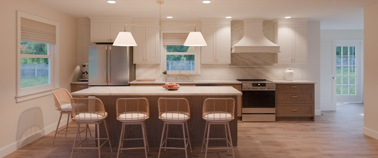
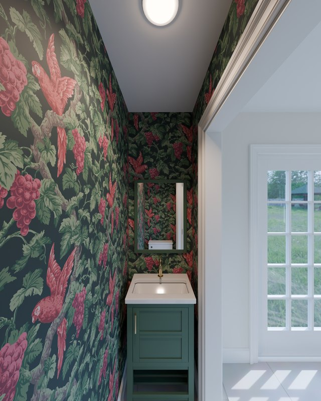
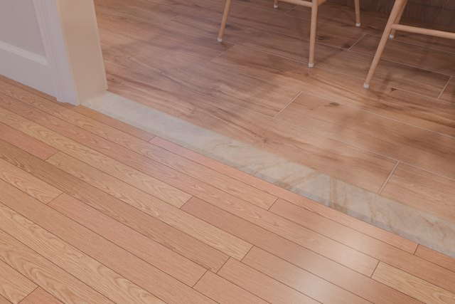

Kitchen Remodel Renders
Photoreal renders of the new kitchen, dining room and powder room, built from the floor plan, the ordered appliances and the chosen finishes. Each page compares options with identical cameras and lighting.

Kitchen Floor Comparison
One floor runs through the kitchen, dining room and powder room. The living room keeps its existing red oak in every option.

Powder Room Wallpaper
Seven papers at their true repeat size on every powder room wall, with the Bailey vanity in Vogue Green; plain paint for reference.

Living Room Threshold
Where the new kitchen floor (Daltile Palomino here) meets the living room's existing red oak, in the Wall B opening: a bevelled saddle across the 4½ in wall, in red oak or honed Taj Mahal.